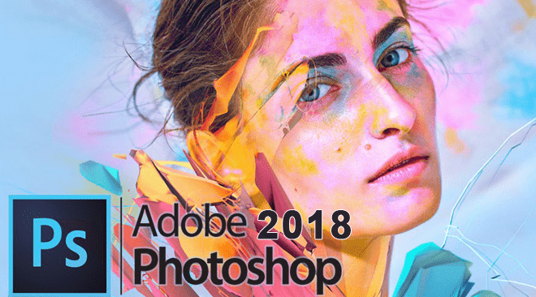
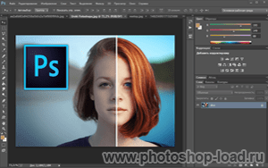

|  | Категория: | Графический редактор |
| Поддерживаемые ОС: | Windows 7, 8, 10 | |
| Разрядность: | 32 bit, 64 bit, x32, x64 | |
| Для устройств: | ПК | |
| Язык интерфейса: | на Русском | |
| Версия: | Последняя |
Photoshop представляет собой графический редактор для работы с изображениями, он широко используется в работе веб-дизайнерами, фотографами, художниками и иллюстраторами. В версии СС 2018 появилось огромное количество новых возможностей и функций по сравнению с предыдущими версиями программы. Большинство из них направлены на облегчение работы пользователя.
|  |  |
 |
Photoshop 2018 на ПК
В данной версии программы улучшены функции кисти, самой интересной из которых является «сглаживание». Для работы с этой функцией нужно выставить флажок в настройках, позволяющий показывать след кисти. Данная опция работает в трех вариантах, таких как следование за мазком, следование за струной и следование до конца мазка. В этой версии кисти можно упорядочить, собрать в папку, что очень удобно при поиске нужной кисточки. В настройках можно создавать кисти с разными кончиками, отпечатками, изменить размер, направление кончика по осям Х и Y, задать форму, жесткость, увеличить или уменьшить интервалы.
В Photoshop CC 2018 улучшена функция масштабирования, оно работает более детально и четко. Программа работает со шрифтами OpenType, позволяя легко настраивать стили, изменять наклон, жирность и другие опции. Данная версия также позволяет создавать и редактировать панорамные изображения, управлять корректирующими слоями, меняя фильтры, цветность и освещение, добавляя или очищая объекты. На панели инструментов появилась такая функция, как «перо кривизны», незаменимая при рисовании кривых и прямых линий. Также появилась возможность изменять ширину и цвет контура, настраивая их в инструментах.
Photoshop для версий windows:
Активация Photoshop 2018
Для активации программы перенесите файл Amtlib.dll из скачанного архива в папку с программой, согласитесь на замену.
По умолчанию пути к программе:
x64 -> C:\Program Files\\Photoshop CC 2018\
x32 -> C:\Program Files (x86)\\Photoshop CC 2018 (32 Bit)\
| Скачать Amtlib.dll для Photoshop 2018 x32 | Скачать Amtlib.dll для Photoshop 2018 x64 |
Скачать Photoshop 2018 бесплатно
| Приложение | OS | Распаковщик | Интерфейс | Торрент | Загрузка |
|---|---|---|---|---|---|
| Photoshop 2018 | Windows 7 | OpenBox | (на русском) | ||
| Photoshop 2018 | Windows 8 | OpenBox | (на русском) | ||
| Photoshop 2018 | Windows 10 | OpenBox | (на русском) |


{kind=link}
Как установить Photoshop 2018:
Запустите файл.
Ознакомьтесь с информацией и нажмите "Далее".
Нажмите "Далее", или снимите галочки с рекомендуемого ПО и нажмите "Далее". Если снять все галочки, рекомендуемое ПО не установится!
После всех шагов дождитесь распаковки.
В установщике нажмите продолжить, интернет на время установки будет отключен, это важно, по окончании установки он будет включен автоматически.
Полезным нововведением также является функция выделения объектов. Данная опция позволяет с помощью «быстрого выделения» на панели инструментов выделить нужный объект автоматически, что позволяет сократить время работы. Локальную коррекцию определенного участка достаточно легко осуществить с помощью маскирования диапазона цвета и яркости. Другими удобными нововведениями стали возможность поделиться изображениями в соцсетях, кнопка «обучение» на панели инструментов и ряд других возможностей. Все они направлены на облегчение работы пользователей с программой и расширение ее возможностей.